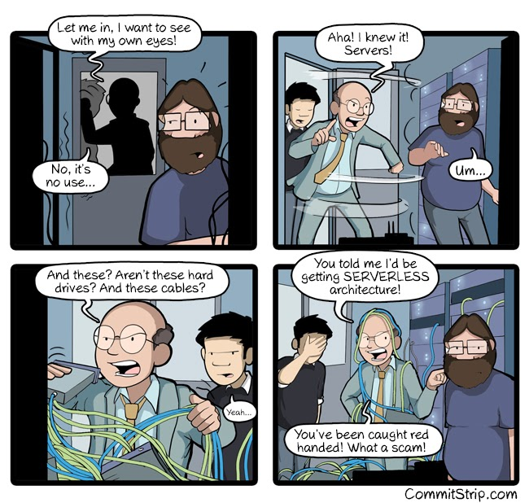
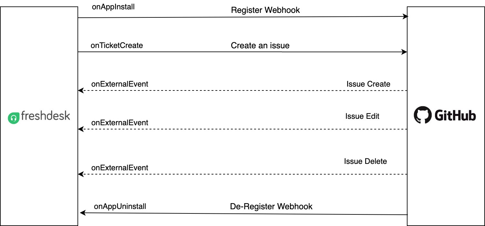
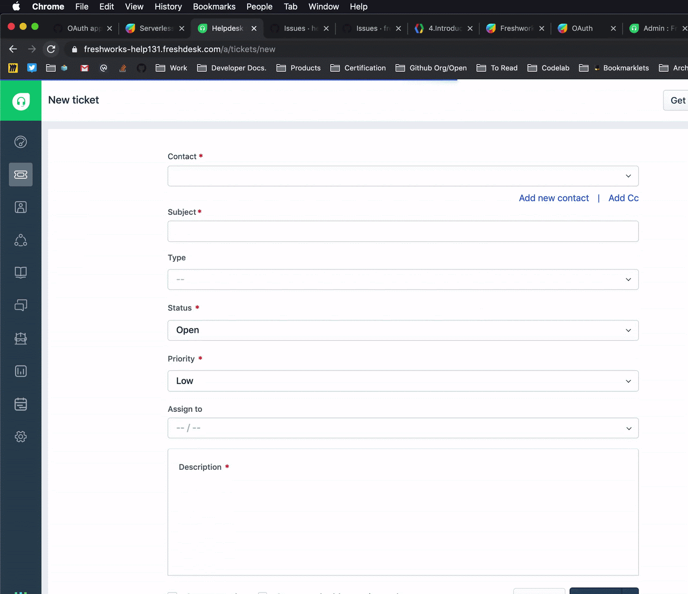
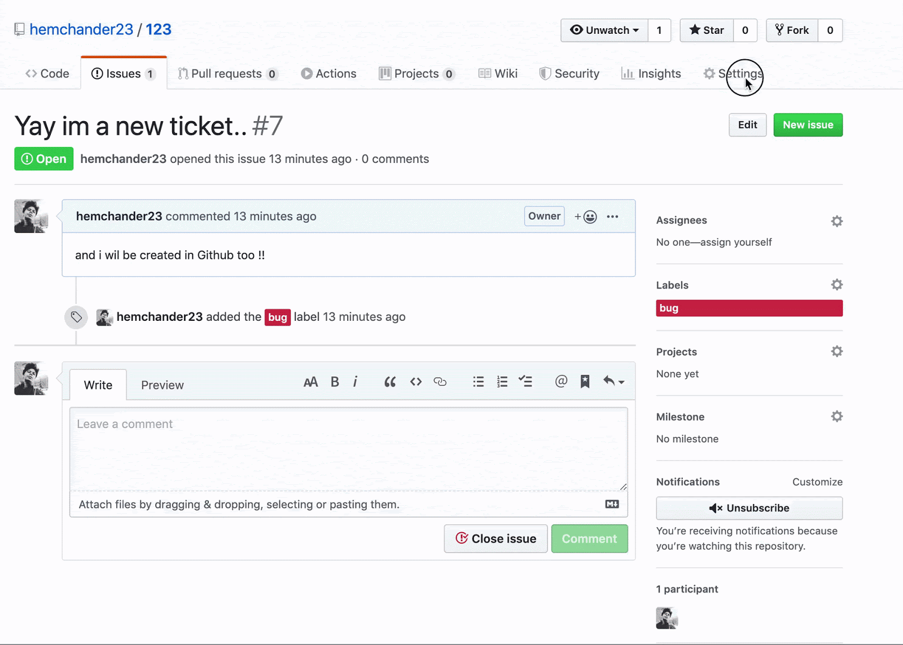

Serverless computing is a software design pattern where applications are hosted by a third-party service, eliminating the need for server software and hardware management by a developer. Applications are broken up into individual functions that can be invoked and scaled individually.
The Freshworks app development platform includes a serverless environment to enable you to create apps that run in response to events that can originate from the Freshworks products, the app setup lifecycle, as well as events from any compatible service on the Internet.
Sample use cases

And yes, as you know already, serverless doesn't mean there are no servers..
Serverless apps primarily respond to events and run custom business logic. The following event types are supported.
App set-up events are triggered when an app is installed or uninstalled. The two corresponding events are,
Product events are triggered by the Freshworks products, such as ticket-create, ticket-update, and lead-delete, that an app can subscribe to.
External Events
Apps can be invoked in response to events that occur in an external product or service, by creating webhooks in that product or service and subscribing to the webhooks in the app. Every time the webhook is triggered, an external event invokes the app in response.
One-time or recurring scheduled events can be created to invoke serverless apps at an appropriate time.
In this tutorial, we are going to build a serverless app that creates a GitHub issue every time a Freshdesk ticket is created. The app will use GitHub webhooks to close the ticket when the corresponding issue is closed.
The following image describes a high-level flow diagram for the app's business logic.

cd Play-Along/Exercises/fundamentals/level3The app source code in the directory is a skeleton on top of which the complete app will be built in the subsequent steps. Files referred to in this tutorial are relative to the Play-Along/Exercises/fundamentals/level1 directory.
Make sure you have the iparam_test_data.json and oauth_config.json setup based on the learnings from the previous tutorial. Based on where the app runs, the OAuth callback URL in the Github app needs to be updated.
In case of :
Testing 👉 http://localhost:10001/auth/callback
Production 👉 https://oauth.freshdev.io/auth/callback
Let us now extend the boilerplate server.js to create issues in GitHub.
{ event: "onTicketCreate", callback: "onTicketCreateHandler" }onTicketCreateHandler method with the code from the following function snippet under the place holder. onTicketCreateHandler: function (args) {
$request.post(`https://api.github.com/repos/${args.iparams.github_repo}/issues`, {
headers: {
Authorization: 'token <%= access_token %>',
'User-Agent': 'FreshHuddle Sample User Agent'
},
isOAuth: true,
json: {
title: args.data.ticket.subject,
body: args.data.ticket.description_text,
labels: [
"bug"
]
}
}).then(data => {
console.info('Successfully created the GitHub issue for the Freshdesk ticket');
saveMapping({ ticketID: args.data.ticket.id, issueID: data.response.id, issueNumber: data.response.number }).then(function () {
console.info('Successfully set the mapping in the db');
}, error => {
console.error('Error: Failed to set the mapping in the db');
console.error(error);
});
}, error => {
console.error('Error: Failed to create the GitHub issue for the Freshdesk ticket');
console.error(error);
});
},function saveMapping(data) {
var dbKey = String(`fdTicket:${data.ticketID}`).substr(0, 30);
var dbKey2 = String(`gitIssue:${data.issueNumber}`).substr(0, 30);
return Promise.all([$db.set(dbKey, { issue_data: data }), $db.set(dbKey2, { issue_data: data })])
}We will revisit this function later to understand why it stores and creates two mappings.
fdk run command to run the app.onTicketCreate event from the drop-down list.
When the app is installed in the account, this is how it will look like :

onTicketCreate event mapping object. This will add two new event handlers (app event handlers) to our serverless app. { event: 'onAppInstall', callback: 'onInstallHandler' },
{ event: 'onAppUninstall', callback: 'onUnInstallHandler' },
onTicketCreateHandler method. This method registers a webhook with Github by using a unique target URL generated by the app. It also stores the target URL in Data Storage. We will shortly see why! /**
* Handler for onAppInstall event
*
* A webhook url is created through generateTargetUrl function.
* The generated url is registered with GitHub for "issues" related events and the same is triggered when an issues is created or modified.
* On successful registration, the webhook URL is stored using $db
*
* @param {object} args - payload
*/
onInstallHandler: function (args) {
generateTargetUrl().then(function (targetUrl) {
$request.post(`https://api.github.com/repos/${args.iparams.github_repo}/hooks`, {
headers: {
Authorization: 'token <%= access_token %>',
'User-Agent': 'FreshHuddle Sample User Agent'
},
isOAuth: true,
json: {
name: 'web',
active: true,
events: [
'issues'
],
config: {
url: targetUrl,
content_type: 'json'
}
}
}).then(data => {
$db.set('githubWebhookId', { url: data.response.url }).then(function () {
console.info('Successfully stored the webhook in the db');
renderData();
}, error => {
console.error('Error: Failed to store the webhook URL in the db');
console.error(error);
renderData({ message: 'The webhook registration failed' });
});
}, error => {
console.error('Error: Failed to register the webhook for GitHub repo');
console.error(error);
renderData({ message: 'The webhook registration failed' });
})
})
.fail(function () {
console.error('Error: Failed to generate the webhook');
renderData({ message: 'The webhook registration failed' });
});
},
installHandler method. The method will fetch the webhook URL from Data Storage when the app is uninstalled and request GitHub to delete the webhook. This ensures that GitHub stops sending notifications to the app after it is uninstalled. /**
* Handler for onAppUninstall event
*
* Gets the webhook URL from the data storage through $db that was stored during installation
* Then deregister the webhook from GitHub with the URL over REST API
*
* @param {object} args - payload
*/
onUnInstallHandler: function () {
$db.get('githubWebhookId').then(function (data) {
$request.delete(data.url, {
headers: {
Authorization: 'token <%= access_token %>',
'User-Agent': 'freshdesk',
Accept: 'application/json'
},
isOAuth: true
}).then(() => {
console.info('Successfully deregistered the webhook for GitHub repo');
renderData();
}, () => renderData())
}, error => {
console.error('Error: Failed to get the stored webhook URL from the db');
console.error(error)
renderData({ message: 'The webhook deregistration failed' });
});
},Upon successful registration, we will be able to see this:

{ event: 'onExternalEvent', callback: 'onExternalEventHandler' }onExternalEventHandler method after the onTicketCreateHandler method. This method fetches the ticket-id corresponding to the GitHub issue that was closed, from Data Storage. This is why we stored the second mapping from the Github issue to the Freshdesk ticket, when the issue was created . We can then close the ticket by a Request API invocation to Freshdesk. /**
* Handler for onExternalEvent event
*
* Checks if the received issue event is of action 'opened' which is received for new issue creation.
* Creates a ticket in freshdesk with the issue title and description.
*
* @param {object} payload - payload with the data from the third-party applications along with iparams and other metadata
*/
onExternalEventHandler: function (payload) {
const payloadData = typeof payload.data === 'string' ? JSON.parse(payload.data) : payload.data;
if (payloadData.action === 'closed') {
lookupTicketId(payloadData.issue.number).then(data => {
$request.post('https://'+payload.domain + "/api/v2/tickets/" + data.issue_data.ticketID,
{
headers: {
Authorization: '<%= encode(iparam.freshdesk_api_key) %>'
},
json: {
status: 5
},
method: "PUT"
}).then(() => {
console.info('Successfully closed the ticket in Freshdesk');
}, error => {
console.error('Error: Failed to close the ticket in Freshdesk');
console.error(error)
})
}, error => {
console.error('Error: Failed to get issue data. Unable to create ticket');
console.error(error);
});
} else {
console.error('The action of the GitHub issue is not defined');
}
}We are now ready to test the app thoroughly.
onExternalEvent from the drop-down list.{
"account_id": 12345,
"event": "onExternalEvent",
"timestamp": 1500351361762,
"domain": "https://sample.freshdesk.com",
"options": "freshdesk.onExternalEvent",
"data": "{ \"action\": \"closed\", \"issue\": { \"id\": 1, \"number\": 2, \"body\": \"a new issue created for a bug\", \"title\": \"bug issue\" } }",
"headers": {
"Content-Type": "application/json"
}
}data property, in the issue object replace the id value with the id you created through an earlier simulation of the app. You should be able to locate the issue from the Issues page of the GitHub repository.Yay! 🎉 You have successfully completed and tested your first advanced serverless app that reacts to product events, app setup events, and external events, as well as leverages OAuth for secure API requests and Data Storage to maintain mappings. Give yourself a pat on the back.👏